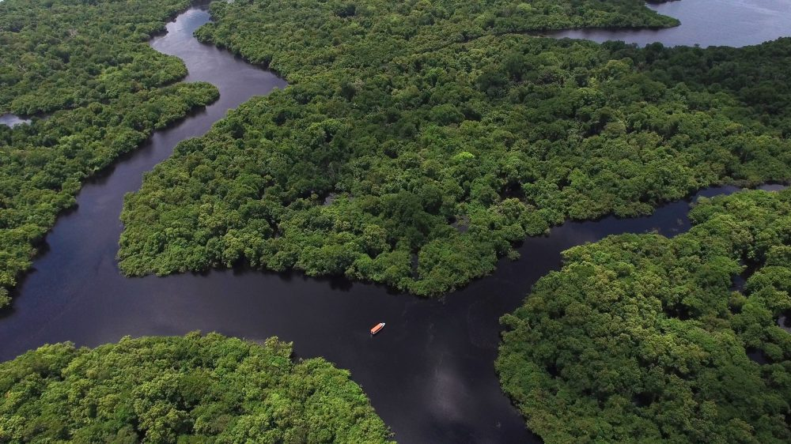

>A Amazônia abriga uma biodiversidade extraordinária
A Amazônia é uma das regiões naturais mais importantes do planeta. Ela ocupa uma grande parte do território brasileiro e se estende por outros países da América do Sul. Sua floresta é formada por uma enorme variedade de árvores, plantas, fungos e animais, incluindo espécies que ainda não foram completamente estudadas pela ciência.
Uma das características mais impressionantes da Amazônia é a sua diversidade de ambientes. Além da floresta densa, existem rios, áreas alagadas e regiões que passam por diferentes períodos de cheia e seca. Esses ambientes oferecem abrigo e alimento para animais como onças-pintadas, botos-cor-de-rosa, araras, macacos e inúmeras espécies de peixes.
A floresta também desempenha um papel importante no ciclo da água. As árvores absorvem água do solo e liberam vapor para a atmosfera por meio da transpiração, contribuindo para a formação de nuvens e para os padrões de chuva. Por isso, a preservação da Amazônia é fundamental para a biodiversidade, para as populações que vivem na região e para o equilíbrio ambiental.
Você sabia? A Amazônia abriga o rio Amazonas, um dos rios de maior vazão de água doce do mundo.
 >
>